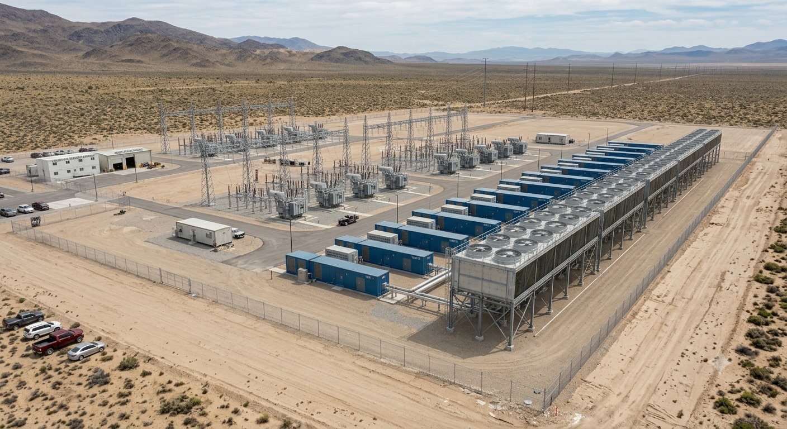
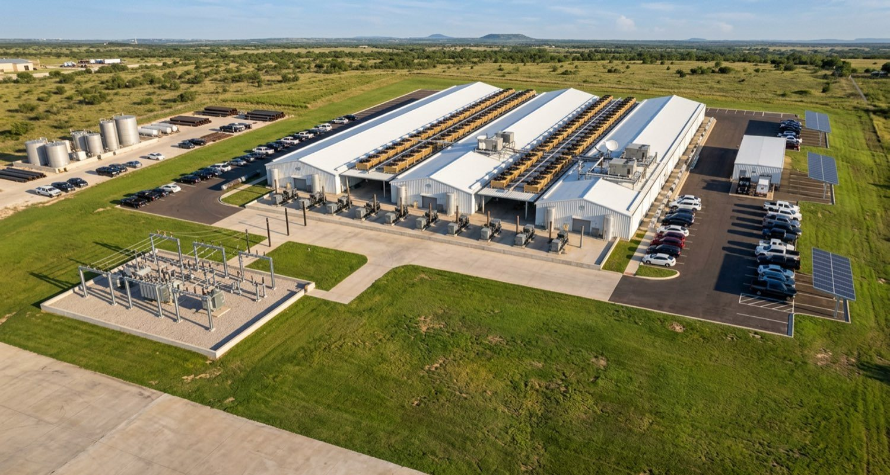
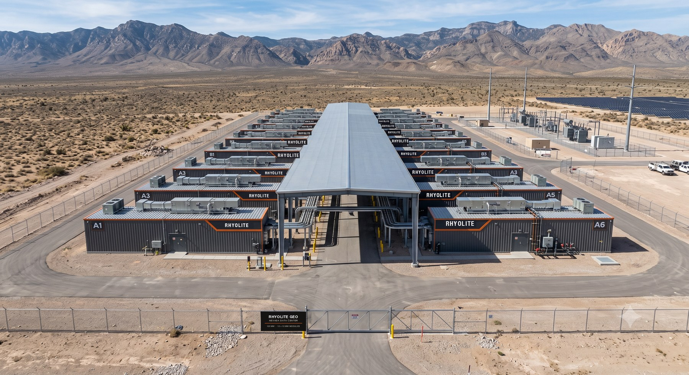

![Rhyolite Geo Inc. — energy and digital infrastructure]()
We build where the power already is.
Illustrative design rendering
Who we are
Rhyolite Geo Inc. is working toward data centers powered and cooled by geothermal energy, taken behind the meter. The power and the building are one project, because neither half answers the other’s problem on its own.
That puts us at both ends of the same market: the supply side, where the resource is located and developed, and the infrastructure side, where the building is designed and built. The company is a startup and it is early. The people are not new to this — years of work in geothermal development and in data center design and construction are what it is built on.
The power half
We locate and secure properties with a geothermal resource and take them through development: steam field, power plant, and the connection to the load, either behind the meter or across the grid.
The building half
We locate sites for small to midsize data center developments and design and build them — co-located with existing alternative energy projects where possible, or on brownfields where existing infrastructure can be reused.
Alternative-powered sites
Our own category: building where the power is already turning
A client arrives with a plant already turning, with raw land, or with a site that used to be something else. All three are developable and the building does not change across them — but the first is the one this company was built around, so it goes first.
An operating clean plant — solar, wind, hydro, geothermal, biogas — carrying generation it cannot always sell well, where the power is taken on site. It sits apart from greenfield and brownfield because nothing about it is a trade-off against schedule: the host cleared its own permits years ago, holds its own interconnection, and is running today. The long items are not shortened; they are already finished, by someone else, before we arrive.
Rapid deployment
No queue position, no new transmission, no utility equipment on the critical path.
Power at the source
Nothing is lost to transmission and nothing is paid to move it.
Clean load by construction
The facility is carbon-free because of where it stands, not because of a certificate bought to say so.
Revenue for the host
A firm buyer standing beside the generator, taking power that would otherwise be curtailed or sold into whatever the market pays that hour.
Resilience
On-site generation is the primary supply rather than the backup, so the usual single point of failure — the line to the property — is not in the path.
Repeatable
Every operating plant with spare generation is the same site again. Scale comes from repeating one standard kit, not from one campus that has to keep growing.
Behind the meter
The power never leaves the property
Behind the meter means we connect on the generator’s side of the meter, so the path from turbine to rack is measured in feet and the power never reaches transmission. Nothing we build touches the utility’s side of it, which is what takes the long items off the schedule below.
A project qualifies in one of two ways — beside an operating clean plant that is already generating and already interconnected, or at geothermal generation we develop ourselves, where load and generation are planned together. The second format is the larger one, 2 to 30 MW per project.
This is one half of what we develop and it is the half the company was built around. The other half is ordinary: a standard building taking grid service like any other commercial load, on a site chosen for the usual reasons. The kit inside is the same either way.
The resource
The heat is developed in phases, against the racks it has to carry
The building half of this is fast because it repeats. The resource half is slow because it has to be proven, and pretending otherwise is how geothermal projects get into trouble.
The screen happens on paper first. Temperature at depth, the wells and surveys somebody has already paid for, and the distance to an interconnection and to fiber. A resource is ranked before any land is taken, because the cheapest well is the one that is never drilled in the wrong place.
Confirmation is the expensive step, so the first projects do not take it. The slow money in geothermal is proving the reservoir. Siting beside a plant that is already generating skips that step: the resource was confirmed, drilled and paid for by somebody else years ago, and the output is already firm.
Where the resource is developed, it is drilled to the load. Wellfield phases are matched to building phases rather than run ahead of them, and each phase is triggered by how full the last one is — the same rule the site build-out follows — so drilled capacity and installed racks move together instead of one waiting years on the other.
This is the half of the business that cannot be made fast, and it is why the first sites are the ones where the slow work is already finished. What the resource buys in return is set out on Geothermal.
The other ground
Greenfield and brownfield, developed to the same standard
Not every client brings a power plant. Where they bring land instead, or a site that was industrial before, the same building lands on it — what differs is how much of the slow site work was done before we arrived.
Greenfield development
A site with nothing on it: raw land, usually beside generation that is new or still being built. Everything is ours to set — where the pad sits, how the yard is laid out, where the fiber enters — so the shell is drawn around the kit instead of the kit being fitted to the shell, with nothing to demolish and nothing to design around.
What it costs is time at the front. Access, grading, water and the power path all start from bare ground, and if the host generation is still under construction, our start-up is tied to theirs.
Brownfield development
A parcel that has already been industrial — a retired plant, an old substation yard, a closed facility whose service, access road and grading are still there. The reuse is the point: the expensive site work was done once already, and heavy power on the property is ordinary rather than something the neighbors have to be talked into.
What it costs is diligence. What is buried there, what easements are already recorded, and a footprint someone else set all have to be established before the kit is fitted into it.
What makes it fast
The schedule is short because the long items are already done
A conventional data center schedule is dominated by work we do not have to do. Siting at generation that is already operating removes it, item by item.
The generation is already permitted and running
We site at plants that cleared their own approvals years ago. The long permitting fight sits behind the host, not ahead of us.
The interconnection already exists
There is no queue position to hold and no new transmission to build.
Utility equipment is off the critical path
The equipment with the worst lead time is the equipment these sites never order.
The kit is standard, the shell is not
One interior package that never changes — electrical room, distribution, cooling, racks, fire and acoustic treatment. It lands in a new building or inside one somebody else already built. The engineering is done once, not repeated for each site, and the pieces are ordered ahead and assembled.
What is left is site work and assembly, so a facility is built and started up in months rather than years.
Built oversized once
The plant is sized for the last kilowatt, on the first day
The parts of the facility that are disruptive to touch twice are built at full capacity while the hall is still dark. Growth after that happens inside a finished building — no second permit, no second trench, no second construction season for the neighbors.
Switchboard
Sized for the ultimate load, so the service is never reworked to add capacity.
Distribution spine
Run at full rating on day one. Later phases tap it rather than replace it.
Generation yard
Built and permitted for both sets, because the noise and air approvals are the slow ones.
Both fiber paths
Two diverse entrances and their conduit go in at the start, whether or not there is a second carrier yet to put in them. Conduit is cheap in an open trench and expensive through a finished floor.
Roof structure
Reinforced for the full cooling load before anything is set on it.
The one we do not control
Network diversity without waiting on a second carrier
Everything else on that list is ours to build. Fiber is not: a second carrier arrives when a carrier decides it does, and at the kind of site we want, that decision often never comes. So the second path is engineered rather than purchased, and it does not have to be fiber.
The lit carrier is bought on a protected ring, not as a point-to-point circuit. A cut on one side of the ring heals on the other, on the carrier’s own alternate route, without us owning a second one. This is ordinary carrier product and it is the first place diversity should come from, because it is the cheapest.
The second path is a different medium. Licensed point-to-point radio to the nearest carrier hotel or point of presence needs line of sight and a license, not a trench, a franchise agreement or a construction season. It is the piece that answers a site where fiber is genuinely hard, and it can be standing before the building is finished.
The host plant is already connected, and nobody counts it. An operating generating facility runs telemetry, protection and dispatch communications, and there is frequently utility-owned fiber on the transmission corridor it sits on. That is a second physical route out of the property that exists because of where we site, and it is asked for during diligence rather than discovered later.
Control does not ride the same paths as the traffic. Out-of-band management over satellite means the facility stays reachable when both data paths are down, so a network failure is a service interruption and never a site nobody can see into.
The trench and the second entrance still go in on day one, because conduit is cheap in an open trench and expensive through a finished floor. What changed is that nothing waits on them. And at the far end of the argument, a tenant with racks in more than one of these buildings has the redundancy that matters most: the sites are small, meshed and independent, so a facility that loses its network is a fraction of a footprint, not the footprint.
Growth
Each phase is triggered by how full the last one is
Capacity is added when the hall fills, not when a calendar says so. The trigger is what keeps the plan from funding empty racks.

Geothermal development
The only renewable that is still running at four in the morning
Global data center electricity demand is projected to double by 2030. Almost everything capable of meeting it either burns fuel or stops when the weather does. One resource does neither.
Geothermal produces from heat that is already in the ground. There is no fuel to buy, no delivery to schedule, and nothing about the output that depends on the sky. For a load that has to answer requests continuously, that single property is worth more than a lower headline cost per unit.
Capacity factor
Where every other renewable breaks against a data center
A data center is the least forgiving load on the grid: continuous, weather-indifferent, and expected to hold better than 99.99% uptime. Measured against that profile, the renewables gap is not close.
- Geothermal
- 85–95%Continuous. No storage required
- Wind, onshore
- 25–45%Intermittent. Requires storage
- Solar PV
- 15–25%Intermittent. Requires storage
Geothermal carries the highest capacity factor of any generating technology, renewable or otherwise. It is also the only one on that list that delivers firm power without a battery system underneath it, which removes both the cost of storage and the second set of equipment that has to survive twenty years on site.
Carbon
Ninety to ninety-seven percent below natural gas
- Geothermal, binary
- 15–55g CO₂eq per kWh, lifecycle
- Natural gas, CCGT
- ~450g CO₂eq per kWh, lifecycle
- Coal
- ~900g CO₂eq per kWh, lifecycle
A binary plant reinjects the geothermal fluid in a closed loop, so direct emissions at the plant are near zero and the lifecycle figure is dominated by construction rather than operation. At 50 MW running at a 95% capacity factor — roughly 416 GWh a year — choosing geothermal over natural gas avoids on the order of 170,000 to 180,000 tonnes of CO₂ every year, and the advantage compounds for every year the asset keeps running.
Dual use
The same resource that powers the racks also cools them
Cooling is 30 to 40% of what a data center consumes. It is the one overhead that a power contract normally cannot touch — unless the power happens to come from the ground.
Absorption cooling
Waste heat from generation drives absorption chillers directly, displacing electrically driven mechanical cooling. In the 4.5 to 13.5 MW range that saves several million kWh a year, and it pays back hardest in exactly the hot climates where conventional cooling is worst.
What it does to PUE
Legacy mechanical cooling runs 1.4 to 1.8. Ground-source brings it to 1.1–1.2, and full geothermal integration in a cold climate approaches 1.03. Every tenth of a point is money and carbon removed from every hour the building operates.
Powering and cooling from one resource is the part that does not show up in a price-per-megawatt-hour comparison. Captured properly it improves project economics by 20 to 40%.
Fuel cost
Zero, and it stays zero for twenty to twenty-five years
No fuel to price. The heat source is the Earth. There is no commodity exposure to hedge and no fuel escalator to negotiate into a long-term contract.
Operating cost is predictable. Annual operations and maintenance typically runs 2 to 5% of installed cost, and it does not move with a fuel market or a utility rate case.
The asset is long. Twenty to twenty-five years, which turns a build decision into multi-decade price certainty rather than a bet on the next rate cycle.
Footprint
One to eight acres per megawatt
- Geothermal
- 1–8Acres per MW of capacity
- Solar PV
- 5–10Acres per MW of capacity
- Wind
- 30–60Acres per MW, including spacing
Most of a geothermal plant is underground. What is on the surface is the power block, the gathering system and the condensers, which is why generation and a building that consumes it can share one parcel instead of competing for it.
The machine in the photograph
Binary cycle, closed loop, built at data center scale
The plant at the top of this page is a binary cycle unit, and it is the technology that matters most here. It is also the reason the resource does not have to be exotic to be useful.
Moderate temperature. It works on resources of 100 to 180°C, which is an ordinary temperature across a great deal of the western United States.
Closed loop. A secondary organic working fluid runs the turbine and the geothermal fluid is fully reinjected, so nothing is vented and direct emissions are near zero.
The right size already. Typical units run 1 to 50 MW. That is not a plant a data center has to be scaled up to meet; it is a plant a data center already fits.
Direction of travel
The resource is getting cheaper while the demand is getting larger
Capacity is climbing
Global geothermal capacity is expected to reach 25 to 30 GW by 2030, from roughly 16 GW in 2023, and the Department of Energy's GeoVision target is 60 GW in the United States by 2050.
Drilling is the cost, and drilling is changing
Wells dominate the capital. Non-mechanical drilling methods now in development could reduce well cost by 50 to 70%, which moves the economics of every project that has not been drilled yet.
Deeper resources are opening
Reaching supercritical rock above 400°C could yield five to ten times the power per well. The resource has not changed; what reaches it is changing quickly.
Meanwhile the major hyperscalers have committed to round-the-clock carbon-free power on timelines that arrive before the end of this decade. Firm clean generation is the scarce thing in that equation, and there is not much of it to go around.
The work behind it
None of this is written from a brochure
Everything on this page sits on a body of research the company has built and keeps: dozens of finished technical and commercial studies of our own, several hundred third-party source documents behind them, and the cost models that the numbers actually come out of. It is an internal library rather than a reading list, and it is the reason we can price a site instead of describing one.
- Our own studies
- 40+Resource, technology, cost and strategy
- Source documents held
- 130+DOE, USGS, NREL, state and academic
- Indexed source texts
- 330Machine-readable and queryable
Resource assessment. Where the heat actually is and how much of it can be converted: a Great Basin screen of the developable resource measured against the operating fleet, a master assessment of the Texas geopressured resource, and drill-cluster ranking with field-size estimates. Sized by established volumetric method, with the paper resource and the recoverable resource kept apart.
Development economics. Greenfield development weighed against acquiring plants that already run, the repricing of existing generation sold on site rather than into a wholesale market, power-price sensitivity carried explicitly instead of buried, and cost basis built field by field from the wellhead to the busbar.
Conversion technology. What the resource requires in equipment rather than in principle: binary and flash selection, harvest technology for a geopressured resource, and technology cost analysis with a recommendation attached to each option.
The load side. Data center development reports at four sizes, from a single building to a phased campus, each carrying financials, equipment, schedule and cost structure, plus a building basis of design and a comparison across the sizes. The generation studies and the load studies were written against each other, which is the whole point of them.
Markets and grid. Transmission study work, colocation pricing structure, and the interconnection and delivery picture that decides whether power is worth more on site than shipped.
The source library underneath. Several hundred third-party papers — federal survey and laboratory reports, state geological work, program archives and academic studies — held in full and indexed so the studies can be checked against their sources rather than cited from memory.
Every document carries the same footer it was written with: preliminary, and verify before relying on it. We would rather hand someone the working papers than a summary they cannot check.
Why we develop it
Baseload for an industry that has run out of it
The reason we work on geothermal at all is the shortage on the load side. The data center industry is resource bound: the sites it wants are constrained by power long before they are constrained by land, capital or demand, and what it is short of specifically is firm baseload — generation that is there at four in the morning in February without a battery or a favorable forecast behind it. Geothermal is one of the few resources that simply is.
We are not trying to build a large data center. What we develop alongside the resource is remote, localized capacity sited at the generating facility itself — individual projects in the range of 2 to 30 MW, taking power where it is made instead of moving it to where a campus would rather be.
Standard deployment
The standard kit, and what it needs around it
These are the design figures the standard kit is built to. They are a planning basis, not construction drawings, and they vary with the parcel.
The figure that matters most is the first one in the table. These buildings are powered on the generation side of the meter, at a plant that is already running, which is what sets the load, the cooling and the schedule. That arrangement is described on Development, and the resource behind it on Geothermal.
- Power
- Behind the meterTaken on site from generation already running
- Load at start
- 500 kWCritical load, first phase
- Rack density
- Up to 30 kWAir-cooled; about 25 racks at 20 kW
- Site build-out
- Up to 2 MWFour buildings at 500 kW, phased; never one larger
- Larger format
- 2 to 30 MWGeothermal-adjacent, sited at the generating facility
- Building
- ~3,000 sq ftNew shell or existing, kit is the same
- Service
- 480/277 VThree phase
- Cooling
- Air-cooledDry coolers, no process water
- Sound limit
- 75 dBAAt the property line
- Fiber
- Lit, on a ringOne carrier in writing, route-protected
- Second path
- Engineered, not boughtRadio, corridor fiber, or conduit built day one
- Network
- Carrier neutralMeet-me room, cross-connects on site
One standard kit
The same kit, in a shell tuned to where it lands
The plan, the electrical room and the equipment inside are the same at every site. What changes is the shell that has to survive the weather: roof, cladding, foundation and heat rejection. These are concept elevations, not construction drawings.
Desert Southwest
Dry high heat regions
A high-albedo roof and a deep overhang keep the sun off the envelope. Dry coolers sit up top, where there is no water to spare.
- Drives it
- Heat · no water
Great Plains
High wind conditions
Low profile with a bermed windward wall. Roof pitched for snow, and the equipment yard tucked on the lee side.
- Drives it
- Wind · snow load
Pacific Northwest
Persistently wet regions
Rainscreen cladding on a vented cavity, wide eaves and a standing-seam roof. The envelope is built to dry out, not just to shed.
- Drives it
- Rain · humidity
Existing shell
Inside a building already built
The module drops into three thousand square feet of an industrial shell that is already powered. Heat rejection goes to the yard outside.
- Drives it
- Schedule · existing service
Why standardize
Designed once, built many times
The engineering is done once, not repeated for each site, so the drawings that leave the office are the drawings that get built.
Long-lead pieces are ordered ahead against a design that does not move, which is what keeps procurement off the critical path.
Crews repeat a building they have already built. The second site is faster than the first, and the tenth is faster than the second.
Data Center Designs
The building is the easy part.
Our founding members have designed and built across a wide range of formats, and each design here is drawn to the need in front of it rather than pulled off a shelf.
120 MW tilt-up campus

- IT load
- 120 MW
- Configuration
- 12 × 10 MW modules
- Structure
- Concrete tilt-up
- Power
- Utility service, grid connected
- Interconnection
- Transmission level, utility study
- Cooling
- Air-cooled, arid-site
- Suits
- Lowest cost per MW at scale
This one takes utility service like any other large load. It is drawn for the customer whose first question is cost per megawatt rather than time to power: concrete tilt-up is the cheapest durable enclosure at this footprint, and twelve identical 10 MW modules mean the engineering and the procurement are done once and repeated eleven times. What it accepts in exchange is the interconnection study and the queue behind it.
10 MW modular build

- IT load
- 10 MW per bank
- Configuration
- Paired module rows, central utility spine
- Structure
- Factory-built modules on slab
- Power
- Behind the meter, on-site generation
- Interconnection
- None required
- Grows by
- Adding rows, not rebuilding
Modules arrive finished. The site work is a pad, a spine and a fence, so the schedule is set by the generator’s availability rather than by construction. Capacity is added a row at a time against demand that is already signed.
What these renderings are and are not
They are design studies, not photographs of built assets. They show the intended arrangement at each size — generation, spine, modules, substation, one property line — and the capacities named beside them are the design cases the pro forma is written against.
How we search
Thousands of candidates, ranked by machine before anyone drives anywhere
Site selection is a data problem before it is a real estate problem. We do the narrowing in software, against public records that nobody has bothered to join together, and we spend field time only on what survives.
A conventional search starts with a broker and a handful of listings, which means it starts with the small set of buildings somebody happened to be marketing. We start from the opposite end: the whole population of candidate parcels and buildings in a region, scored against the metrics that actually decide whether a small data center can be built there, and reduced by ranking rather than by chance.
One — build the universe
Federal, state and county records pulled into a single keyed map: the EPA facility registry and its enforcement records, the Department of Energy's industrial assessment database with measured plant energy use, state closure and layoff notices, public transmission and substation geography, county assessor and parcel files, and commercial listings that publish amperage and clear height. Every record is keyed to a parcel, so sources that were never meant to speak to each other can be cross-referenced against the same piece of ground.
Two — score against the metrics
Each candidate is scored on the handful of measures that decide the outcome: electric service already energized and at what size, distance and voltage of the nearest substation, lit fiber, clear height, floor loading, floodplain position, zoning, environmental record, and room for an equipment yard. Weighted, not averaged — a site is not compensated for missing power by having good zoning.
Three — rank, then cut
The scoring produces a ranked database rather than a verdict, which is the point: the threshold can be moved and the whole population re-sorts. Anything failing a fatal screen is dropped outright. What remains is a finalist list short enough to visit.
Four — field analysis
Only finalists earn a site visit. Structural inspection, a read of the actual service and switchgear, sound and setback measured on the ground, and the conversations that no dataset holds — with the utility, the local authority and the owner. Field findings go back into the database, so what we learn on one site re-ranks every other.
Five — validate upward
The surviving sites are proven in writing, in ascending order of cost: a written fiber quote, a utility capacity study and will-serve letter naming the megawatts, a Phase I environmental assessment, a structural report. Every claim that started as a data point ends as a document, or the site drops out.
Existing buildings
The best site is usually one somebody else already powered
A large share of what we look for is not land. It is a building that already has more electric service than its current use needs — a plant that closed, a facility that shrank, an operation that was sized for a load it no longer runs. The slow and expensive work was finished years ago by somebody else, and what is left is fitting it to a much smaller, much denser use than it was built for.
This is where the schedule is actually won, and it is why buildings in the two to five megawatt band have become genuinely scarce. Almost nobody is hunting them at our size — the attention is all on sites large enough for hyperscale.
Heavy industrial and process buildings. Printing plants, food and cold storage, fabrication. Reinforced slabs, real floor loading and large clean spans, and service sized for machinery that has already been switched off.
Buildings sized for a load that left. Controlled-environment agriculture, older telecom and process facilities, plants that downsized rather than closed. Service in the low megawatts, well matched to a building that starts at 500 kW and grows.
Sites beside generation. Industrial parcels adjacent to plants that are already generating and already interconnected, where power can be taken on site rather than moved across transmission.
The discipline this demands is skepticism. Most buildings that look powered are not: the service was reduced after the tenant left, the capacity was never contractually theirs, the switchgear cannot be reused, or the floor will not carry the equipment. That is why the screens below are applied to a retrofit candidate exactly as they are to bare land.
Fatal screens
The gate a candidate passes before it costs anyone a day
These are pass or fail, applied in order, and a site that misses one is not negotiated — it is dropped. Most of them can be evaluated from the database before anyone is contacted, which is what makes screening thousands of sites affordable in the first place.
Service already energized
Three-phase service live at the property today, confirmed by the utility account record — not by a panel schedule. A site that needs a new utility transformer is disqualified, because that lead time now runs longer than the entire rest of the schedule.
Fails on a service that has to be builtFiber lit, and a second way out
One carrier lit nearby and confirmed by a written quote, plus at least one buildable second path: a ring the carrier already runs, line of sight to a point of presence, or fiber on the host’s transmission corridor. A coverage map is a marketing artifact and is not evidence that anything is in the ground.
Fails on no lit service, or no second path of any kindPermitted by right
The use is allowed by right under the existing zoning. We do not buy a rezoning fight, and we do not ask a community to change its plan to accommodate us.
Fails on a use that needs a rezoningOutside the floodplain
Clear of the mapped floodplain, including the 500-year outline, rather than engineered into compliance with it.
Fails on mapped flood riskClear height and a clean span
Enough clear height for the equipment, with no columns landing where the rows need to run. A structure that has to be cut apart is a structure we did not need to buy.
Fails on columns through the hallRoom for the equipment yard
Side or rear yard for generation and cooling, positioned and screened so the sound stays inside the property line at the neighborhood limit.
Fails on no yard, or no room to screen itClean environmental history
A clean Phase I environmental assessment. Findings are not a price negotiation; they are a reason to walk.
Fails on a recognized environmental conditionInvestors Perspective
We build where the power already is
If you follow this industry, you already know the bottleneck. This page is here so you can judge for yourself whether our answer to it is a real one.
Demand for compute is not what is holding data centers back. Power is. A project that needs new transmission is waiting on other people's schedules — a study queue, a utility's construction plan, and equipment ordered years before it arrives — and the wait is now long enough that operators routinely talk about the end of the decade. Meanwhile, generating plants already running and already interconnected cannot always sell everything they make.
Rhyolite Geo Inc. builds at the plant itself, on the generator's own property. The power never reaches transmission, so the schedule belongs to the site instead of to a queue, and the plant gets a buyer for output it was otherwise going to discount or spill. The mechanics are on the Development page.
The buildings are deliberately unimpressive: roughly three thousand square feet, starting at 500 kW, phased toward two megawatts per site by repeating the same building rather than enlarging it. That is the whole strategy, and each part of it does real work. Small draws no opposition, in an industry now meeting moratoriums and zoning fights wherever it proposes something enormous. Standard means the engineering is paid for once. Repeated means capacity that fails in small pieces, near the people it serves, instead of concentrating a region's compute behind one service entrance.
Why now
The companies that built the largest campuses have published the case for spreading out
A small data center is not a scaled-down version of a large one. It is a shape that became buildable, and the engineering that made it buildable was published by the operators running the biggest facilities on earth.
Failure isolation became arithmetic. Amazon works the combinations out in the open: shuffle-sharded across eight workers, a problem reaches one twenty-eighth of customers rather than a quarter. Spreading load is a number you can compute before you build.
Distance became a budget, not an obstacle. Coherent optics ship in an ordinary pluggable transceiver, spanning eighty to a hundred and twenty kilometres. Under fifty, the equipment at each end adds more delay than the glass between them.
What fails together is rarely the building. Google’s 2019 outage report records automation descheduling independent clusters at once, “crucially even if those clusters were in different physical locations.” Redundancy that shares a control plane is not redundancy.
Inference wants to be near the person asking. Its constraint is the delay on one request, and interactive budgets run in the hundreds of milliseconds. A distant campus spends a meaningful share of that on the wire before any work is done.
Spreading storage got cheaper than duplicating it. Meta reports cutting effective replication from 3.6 copies to as low as 2.1 while still surviving the loss of a whole data center. Geographic spread stopped being the expensive option.
Weather correlates generation across whole regions. Federal regulators found eighty-one per cent of freeze-related generating outages in February 2021 happened above the units’ own design limits. Diversity of geology and interconnection is a different hedge than diversity of buildings.
- 1/28th
- Scope of impact across eight shuffle-sharded workers Amazon Web Services
- 1,000 km
- Training split across two sites at over 96% efficiency NVIDIA
- 1.33×
- Raw capacity to survive failures, against 3× for replication Microsoft Research
- <100 km
- Deliberate separation between availability zones Amazon Web Services
The honest limit: training a frontier model is tightly coupled work that wants one building, and we do not claim that workload. Even there the ground moved. Microsoft built a campus explicitly for it, then published that demand is outpacing the power and space of a single facility and that it now connects sites across geographically diverse locations.
Small sites carry their own costs. Supporting infrastructure runs in the millions per megawatt whether the megawatt is alone or in company, and power remains the most common cause of serious outages — the exposure a small site is least equipped to absorb. Distribution reduces correlated risk. It does not reduce the risk at any one site.
So the tenants this shape suits are specific: regional enterprises, managed service providers, and inference that has to answer near the people asking — capacity in their own region rather than space in a distant campus, and resilience that comes from being spread out rather than from being big in one place.
Let us know if you would like to see updates from us.
Important notice
We are “testing the waters” to gauge investor interest in an offering under Regulation Crowdfunding. No money or other consideration is being solicited. If sent, it will not be accepted. No offer to buy securities will be accepted and no part of the purchase price will be received until an offering statement (Form C) is filed with the SEC and only through an intermediary’s platform. Any indication of interest involves no obligation or commitment of any kind. Nothing on this page is an offer to sell or a solicitation of an offer to buy any security.
Get in touch
Send us an email and we will get back to you
Tell us what you are interested in and we will reply — a site you want looked at, capacity at one of ours, working together on a development, or a question about the company. Include enough for us to be useful: roughly where, roughly how much power, and what you are trying to do.
Email is the whole process. There is no form to fill in, no sequence of follow-ups, and no newsletter.